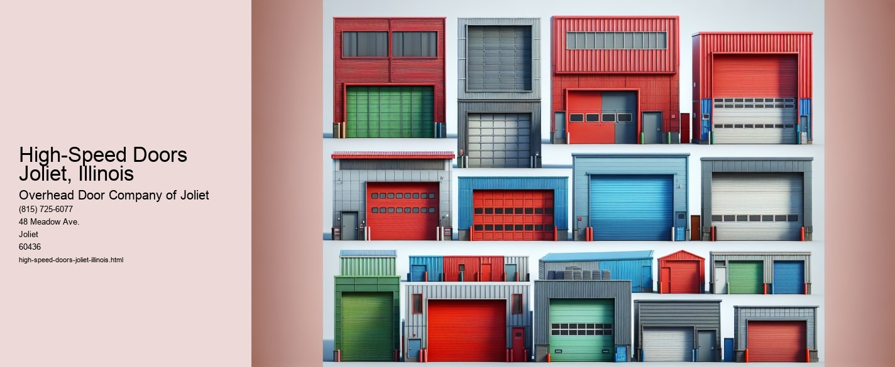

High-speed doors have become an essential feature in various industries, providing both practical and economic benefits. In Joliet, Illinois, businesses are increasingly recognizing the advantages these doors offer, especially in sectors where efficiency, safety, and climate control are paramount. As a bustling city with a diverse economic landscape, Joliet serves as a prime example of how modern technology can enhance operational efficiency and contribute to overall business success.
One of the primary benefits of high-speed doors is their incredible efficiency. Unlike traditional doors, which can be slow and cumbersome, high-speed doors operate at an impressive pace, opening and closing in mere seconds. This speed is particularly beneficial in environments where time is of the essence, such as warehouses, manufacturing plants, and distribution centers. In Joliet, where logistics and transportation play a significant role in the local economy, the use of high-speed doors can drastically reduce waiting times, streamline operations, and enhance productivity.
Moreover, high-speed doors are designed with safety in mind. With features such as sensor technology and customizable settings, these doors help prevent accidents by automatically halting or reversing if an obstruction is detected. In busy industrial settings, where the risk of accidents is higher, having doors that prioritize safety is crucial. Businesses in Joliet have embraced this aspect, ensuring that their operations not only run smoothly but also prioritize the well-being of their employees.
Climate control is another significant advantage offered by high-speed doors. Joliet experiences a range of weather conditions, from hot, humid summers to freezing winters. In such a climate, maintaining a stable internal environment is vital for businesses, especially those dealing with temperature-sensitive goods. High-speed doors minimize the exchange of air between indoor and outdoor environments, helping to maintain a consistent temperature and reducing the strain on heating and cooling systems.
Furthermore, high-speed doors contribute to improved security. Their rapid operation and robust design make unauthorized access more challenging, providing businesses with an added layer of protection against potential security breaches. In a city like Joliet, where businesses must safeguard their assets, the enhanced security offered by high-speed doors is a valuable asset.
In addition to their functional benefits, high-speed doors also offer aesthetic advantages.
Overall, the adoption of high-speed doors in Joliet, Illinois, is a testament to the citys commitment to innovation and efficiency.
Sectional Doors Joliet, Illinois